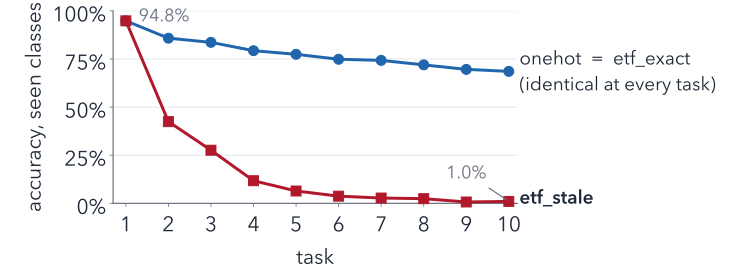
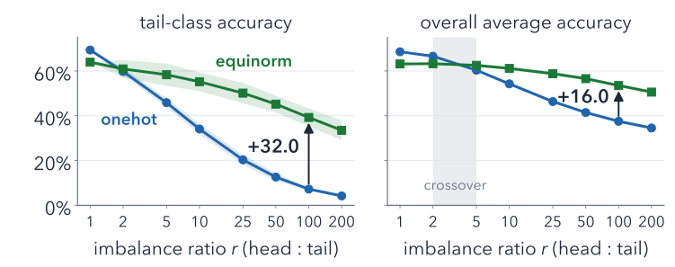
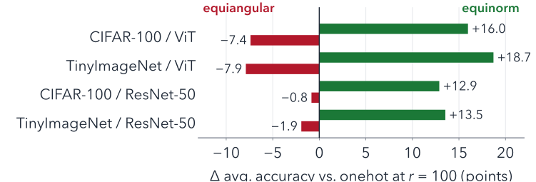

NeurReps 2026 · Symmetry and Geometry in Neural Representations · NeurIPS 2026 Workshop
An Impossibility Result for ETF Target Geometry, and an Equinorm Remedy for Imbalanced Analytic Continual Learning
TL;DR Neural-Collapse ETF targets in exact analytic continual learning are provably identical to one-hot targets, and the literal “progressively expand the ETF” recipe causes catastrophic forgetting. What helps is equal weight norms: post-hoc equinorm gives +32 tail / +16 average accuracy points at 100 : 1 imbalance.
1Can ETF targets help analytic CL?
- Analytic CL (ACIL, GACL): frozen backbone + ridge head $W=(\Phi^\top\Phi+\lambda I)^{-1}\Phi^\top Y$, updated exactly per task by Sherman–Morrison–Woodbury. Exemplar-free.
- ProNC: SGD-trained CL improves with a progressively expanding Simplex ETF target.
- Simplex ETF $A=[a_1,\dots,a_K]$: $\|a_c\|=1$ (equinorm), $\langle a_c,a_{c'}\rangle=-\tfrac{1}{K-1}$ (equiangular).
Q: swap ACIL's one-hot targets for an ETF? A: it changes nothing.
2Theorem: target geometry is invisible
Targets $E=YA^\top$, scores $s_A(x)=\phi^\top W_A\,A$. For any fit linear in its targets (ridge, weighted ridge, ACIL/GACL, RanPAC):
Identical argmax for every input, every $m\ge K{-}1$, every $\lambda$, every task, any sample weighting.
Verified on real features: score gap $<1.1\times10^{-14}$.
Escapes: compressed frames $m<K{-}1$ (no ETF exists; costly, ${\le}\,7.8\%$ accuracy vs. $68.6\%$) or non-linear post-processing of $W$ (4).
3Simplex ETFs are not nested
Proposition. ETFs for $K$ and $K{+}1$ classes share at most one vertex: any fixed pair's cosine would have to be both $-\tfrac{1}{K-1}$ and $-\tfrac1K$.
Fused methods must recompute the ETF each task (etf_exact $\equiv$ one-hot) or keep old target blocks in their old frame (etf_stale):

onehot); same on TinyImageNet and ResNet-50.4Split the ETF, apply it to $W$
Targets are inert, so impose each ETF property on the fitted weights, a non-linear map outside the theorem:
- equinorm: equalize column norms of $W$, keep its angles. ($\tau$-normalization with $\tau{=}1$, Kang et al.; new here: in analytic CL, split from equiangularity.)
- equiangular: set all pairwise cosines to $-\tfrac{1}{K-1}$, keep its norms.
Why norms? From $r=1$ to $100$, the norm ratio $\|w\|_{\max}/\|w\|_{\min}$ of the fitted $W$ grows 5.2 → 43.7; the spread of its cosines barely moves (0.72 → 0.78). Imbalance lives in the norms.
Setup. Frozen ViT-B/16 and ResNet-50; CIFAR-100 and TinyImageNet, 10 tasks. Long tail: exponential per-class budget, head : tail ratio $r$. 5 seeds; all heads fit in lockstep on identical features.
5Equinorm rescues the long tail

CIFAR-100/ViT, mean $\pm$ s.d. over 5 seeds; tiles at $r=100$ (onehot → equinorm). Cost near balance: $-5.4$ points at $r=1$, $-3.4$ at $r=2$.
6It transfers; equiangularity hurts

onehot in all four.Take-home
- ETF targets in analytic CL are provably identical to one-hot targets.
- The literal progressive-ETF recipe leaves stale targets, which bring back catastrophic forgetting.
- The useful half of Neural-Collapse geometry is equinorm on the weights; equiangularity is at best inert, usually harmful.
ACIL: Zhuang et al., NeurIPS 2022 · GACL: Zhuang et al., NeurIPS 2024 · ProNC: Wang et al., ICLR 2026 · Neural Collapse: Papyan et al., PNAS 2020 · RanPAC: McDonnell et al., NeurIPS 2023 · $\tau$-norm: Kang et al., ICLR 2020
Citation
@misc{sezer2026impossibilityresultetftarget,
title={An Impossibility Result for ETF Target Geometry, and an Equinorm Remedy for Imbalanced Analytic Continual Learning},
author={Berk Sezer},
year={2026},
eprint={2610.24844},
archivePrefix={arXiv},
primaryClass={cs.LG},
note={Accepted at the NeurReps 2026 Workshop (Extended Abstract Track), NeurIPS 2026},
url={https://arxiv.org/abs/2610.24844},
}